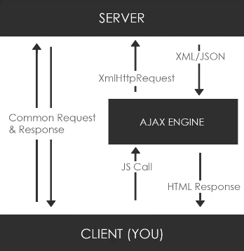

setTimeout
- setTimeout(function, ms)
- Executes function when milliseconds have passed.
const users = ['James', 'Yuna']
function getUsers() {
setTimeout(() => {
users.forEach(user => console.log(user))
}, 1000)
}
Callbacks
Pass a callback to execute when needed.
const users = ['James', 'Yuna']
function getUsers() {
setTimeout(() => {
users.forEach(user => console.log(user))
}, 1000)
}
function createUser(user, callback) {
setTimeout(() => {
users.push(user)
callback()
}, 2000)
}
createUser('Ridley', getUsers)
Promises
- .then()
- Called when resolve()
- .catch()
- Called when reject()
const users = ['James', 'Yuna']
function getUsers() {
setTimeout(() => {
users.forEach(user => console.log(user))
}, 1000)
}
function createUser(user) {
return new Promise((resolve, reject) => {
setTimeout(() => {
users.push(user)
const error = false
!error ? resolve() : reject('Error')
}, 2000)
})
}
createUser('Ridley')
.then(getUsers())
.catch(err => console.log(err))
Promise.all
For many promises.
Returns a single promise.
Resolves to an array of the results of the promises.
Rejects if any of its promises rejects.
const p1 = Promise.resolve('Hello World')
const p2 = 10
const p3 = new Promise((resolve, reject) => {
setTimeout(resolve, 2000, 'Goodbye')
})
const p4 = fetch('someApi').then(res => res.json())
Promise.all([p1, p2, p3, p4])
.then(values => console.log(values))
async/await
Cleaner way to use promises.
- async
- Allows the use of await inside.
- await
- Suspends execution until promise is resolved or rejected.
async function init() {
const res = await fetch('someApi')
const data = await res.json()
console.log(data)
}
init()
AJAX
Asynchronous JavaScript & XML.
Send & Receive data asynchronously.
Does not have to reload webpage.
JSON, XML and plain text.
Plain JS: XmlHttpRequest (XHR)
Libraries: Fetch API, Axios, etc..

CORS
Cross Origin Resource Sharing
fetch API
fetch('url.url.com/api', {
mode: 'cors'
});
XmlHttpRequest (XHR)
Native - Old
Provided by the browser's JS environment.
Can be used with other protocols than HTTP.
GET
let xhr = new XMLHttpRequest()
xhr.open('GET', 'someApi', true)
// OPTIONAL - used for loaders
xhr.onprogress = function () { }
xhr.onload = function () {
if (this.status == 200) {
let users = JSON.parse(this.responseText)
let output = ''
for (let i in users) {
output += `<p>${users[i].id}</p>`
}
document.querySelector('#users').innerHTML = output
} else if (this.status = 404) {
document.querySelector('#users').innerHTML = 'Not Found'
}
}
xhr.onerror = function () {
document.querySelector('#users').innerHTML = 'Request Error...';
}
xhr.send();
readyState
- readyState
- 0: request not initialized
- 1: server connection established
- 2: request received
- 3: processing request
- 4: request finished and response is ready
xhr.open('GET', 'someApi', true);
console.log('READYSTATE: ', xhr.readyState);
Fetch API
Native - New
Promise based (can use .then() .catch() or async await)
- .json()
- Converts response to JSON format.
- Returns a Promise.
- JSON.stringify()
- Converts JSON to String.
- For POST.
GET
fetch('someApi')
.then(res => res.json())
.then(data => {
let output = ''
data.forEach(user => {
output += `<p>${user.id}</p>`
})
document.querySelector('#users').innerHTML = output
})
.catch(console.log('ERROR'))
POST
let title = document.querySelector('#title').value
let body = document.querySelector('#body').value
fetch('someApi', {
method: 'POST',
headers: {
'Accept': 'application/json, text/plain, */*',
'Content-type': 'application/json'
},
body: JSON.stringify({title: title, body: body})
})
.then(res => res.json())
.then(data => console.log(data))
Axios
3rd party - New
HTTP Statuses
| 200 | OK |
|---|---|
| 400 | Bad request |
| 401 | Unauthorized |
| 403 | Forbidden |
| 404 | Not found |
| 500 | Internal server error |